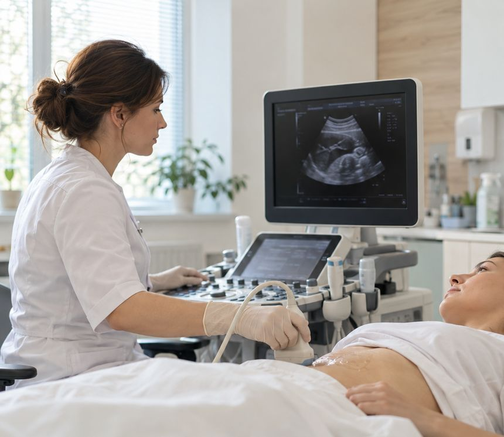
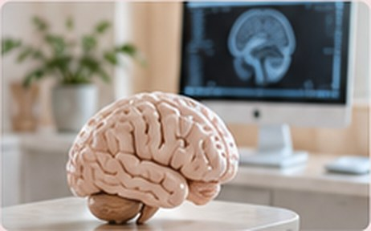

Головная боль и мигрень
Частые или сильные головные боли, приступы с тошнотой и светобоязнью, боль напряжения к вечеру.
Невролог в Красноярске: приём врачей со стажем около 30 лет, в том числе кандидата медицинских наук. Разбираемся в причинах головной боли, болей в спине, онемения и головокружения; проводим ботулинотерапию под УЗИ-навигацией и ЭЭГ.
Обезболивающее снимает боль на время, но не отвечает на вопрос «почему». Невролог ищет причину и предлагает план, а не просто рецепт.
Частые или сильные головные боли, приступы с тошнотой и светобоязнью, боль напряжения к вечеру.
Боль в пояснице или шее, «прострелы», боль, отдающая в руку или ногу, скованность по утрам.
«Мурашки», онемение пальцев рук и ног, слабость в кисти, ночное онемение рук.
Неустойчивость при ходьбе, головокружение при поворотах головы, ощущение «ватной» головы.
Трудно заснуть, частые пробуждения, дневная сонливость, снижение памяти и концентрации.
Непроизвольное зажмуривание, наклон или поворот головы, повышенный тонус мышц руки или ноги.
БотулинотерапияЭти признаки могут говорить об инсульте или другом неотложном состоянии. Вызывайте скорую помощь сразу, не дожидаясь приёма:
Не уверены, какой приём нужен? Опишите администратору повод обращения в общих словах — он подскажет.
Подходит, если вас беспокоят головные боли, боли в спине, онемение, нарушения сна, а также для наблюдения при хронических неврологических заболеваниях.
ЗаписатьсяДля сложных и длительно текущих случаев, когда лечение не дало ожидаемого эффекта, а также если вам важно второе мнение по уже поставленному диагнозу.
ЗаписатьсяБотулинотерапия — введение препарата ботулинического токсина в определённые мышцы, чтобы уменьшить их избыточное напряжение. В неврологии метод применяют при хронической мигрени, блефароспазме, цервикальной дистонии и спастичности.
При дистонии и спастичности введение проводится под УЗИ-навигацией: врач видит мышцу на экране и точнее выбирает точку введения. Показания, препарат и дозу определяет невролог на консультации; эффект развивается постепенно и сохраняется ограниченное время, поэтому процедуру, как правило, повторяют по графику, который составит врач.
Подробнее — на странице ботулинотерапии и в статье «Ботулинотерапия в неврологии».
Цены указаны без стоимости препарата. Перед процедурой обязательна консультация невролога.
О ботулинотерапии
Приём рассчитан на подробный разговор: врачу важно услышать, как и когда появились симптомы.
Врач уточняет жалобы, их характер и продолжительность, перенесённые заболевания и травмы, принимаемые препараты.
Неврологический осмотр: рефлексы, сила мышц, чувствительность, координация, подвижность позвоночника.
По показаниям — ЭЭГ, УЗИ сосудов головы и шеи, СМАД в нашем центре или направление на МРТ.
Врач объясняет предполагаемую причину, план лечения и что можно делать самому, и выдаёт письменные рекомендации.

Если врачу нужны дополнительные данные, многие исследования можно пройти в нашем центре, не тратя время на поиск другой клиники.
Электроэнцефалография — запись биоэлектрической активности мозга. 1 800 ₽.
ПодробнееДуплексное сканирование брахиоцефальных артерий. 1 800 ₽.
ПодробнееДуплексное сканирование транскраниальных артерий и вен. 1 800 ₽.
ПодробнееСуточное мониторирование давления — если головная боль может быть связана с давлением. 1 800 ₽.
ПодробнееНесколько простых шагов помогут врачу быстрее разобраться в ситуации.
Как подготовиться к ЭЭГ и другим исследованиям — в разделе «Пациентам».
Образование, стаж и график приёма каждого врача — в профиле. Все врачи →
Цены совпадают с прайсом, утверждённым в клинике. Стоимость препаратов указана отдельно, если не оговорено иное.
Не нашли ответ? Позвоните: +7 (913) 558-87-11
Нет. МРТ назначают по показаниям после осмотра — нередко без неё можно обойтись. Если снимки у вас уже есть, обязательно возьмите их с собой.
Это приём врача с учёной степенью и большим опытом в сложных случаях. Его выбирают, когда диагноз неясен, лечение не помогает или нужно второе мнение. Для первого обращения с типичными жалобами подойдёт и обычный приём невролога.
Ботулинотерапия входит в число методов профилактического лечения хронической мигрени. Подходит ли она вам, врач решает после осмотра и оценки дневника головной боли. Эффект развивается постепенно и индивидуален. Подробнее — на странице ботулинотерапии.
Вымойте голову накануне или утром и не наносите лак, гель и масла. Не приходите натощак. Если вы принимаете противосудорожные или успокоительные препараты, не отменяйте их самостоятельно — скажите об этом врачу.
Да, по графику врача субботний приём есть. Актуальное расписание — в профилях врачей выше и у администратора по телефону +7 (913) 558-87-11.
Например: УЗИ, SVF, гинеколог, ЭКГ, массаж